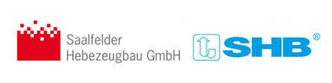

КАТАЛОГ ТЕХНИКИ
Грузоподъемное оборудование |
|
Группа компаний КранПро с 2002 года реализует подъемные краны и крановое оборудование, а так же изготавливает, на собственном производстве, высококачественные запасные части для кранового оборудования. Мы являемся официальным дилером ОАО "Могилевский завод "Строммашина" на территории Российской Федерации, представителем Нязепетровского завода (Нязепетровск. Челябинская область), которые занимают лидирующее положение по производству башенных кранов в России и Восточной Европы. Такие модели, башенных кранов, как КБМ 401П, КБ-586, КБ-477, КБ--476, КБ-314, КБ-236, КБ-403Б, КБ-408.21, КБ-408.21А зарекомендовали себя, как отличное соотношение цена-качество. Эксплуатационные качества и технологичность высоко оценивается нашими клиентами. Вся продукция сертифицирована и имеет гарантию 18 месяцев.
ВНИМАНИЕ!!! Новая модель башенный кран TDK-10.215 NTK АКЦИЯ!!! Новые башенные краны КБМ 401П по отличной цене.
Предоставляем услуги : Демонтаж, монтаж, модернизация козловых, мостовых кранов, крановых путей. Монтаж консольных кранов, кран балок. Ремонт и обслуживание кран-балок, козловых, мостовых кранов. Изготовление и проектирование крановых эстакад. Модернизация и автоматизация кранового оборудования (подъемники, мостовые, консольные и т.д) Монтаж талей, тельферов импортного и российского производства. Разработка электрической схемы для перевода крана на частотные преобразователи (достигается плавность хода). Обследование, нивелировка, ремонт, рихтовка крановых (подкрановых) путей. Ремонт приводов и механизмов грузоподъемных машин. КранПро является не просто производителем и поставщиком, но и партнером, с которым легко и приятно работать на протяжении долгих лет. Мы с уверенностью смотрим в будущее, выполняя все обязательства точно в срок. Приоритеты клиентов для нас всегда на первом месте. Оцените все преимущества сотрудничества с нами! Аренда и продажа башенных кранов в Спб и других городах России. Осуществляем доставку по всей России и Ближнему Зарубежью, в такие города, как: Анадырь, Москва, Новосибирск, Орел, Брянск, Курск, Саратов, Минск, Красноярск, Сургут, Нижневартовск, Краснодар, Екатеринбург, Казань, Самара, Уфа, Волгоград, Ростов-на-Дону, Саратов, Воронеж, Пермь, Витебск, Барнаул, Тольятти, Белгород, Ульяновск, Тюмень, Ижевск, Владивосток, Иркутск, Хабаровск, Ярославль, Мурманск, Оренбург, Махачкала, Томск, Новокузнецк, Кемерово, Астрахань, Рязань, Пенза, Липецк, Набережные Челны, Чебоксары, Киров, Калининград, Курск, Улан-Удэ, Магнитогорск, Ставрополь, Тверь, Иваново, Сочи, Великий Новгород, Нижний Новгород, Астана, Алматы, Караганда, Павлодар, Пенза, Псков.
Партнеры:
 изделия Полы 3д Промышленные полы Создание и продвижение сайта |

Новости
Запчасти для мостовых, козловых, портальных, башенных кранов в наличии и под заказ, изготовим по Вашим чертежам. |
Изготовлена партия крановых колес К2Р для "Контейнерного терминала" 710/100 в кол-ве 24 шт. |
По заказу "Метрострой" Санкт-Петербург изготовлены крановые колеса в сборе с нестандартными буксами и валами, блоки крановые. Наша продукция используется при строительстве метро. |